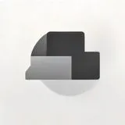

내게 딱 맞는 클라우드 저장소? 주요 요금제별 완벽 비교 가이드
사진: panumas nikhomkhai / Pexels (무료 이미지, 출처 표기)
디지털 시대의 필수품, 클라우드 저장소
파일 관리에 어려움을 겪고 계신가요? 클라우드 저장소는 언제 어디서든 파일에 접속하고, 안전하게 백업하며, 공유를 편리하게 해주는 필수 서비스입니다. 기기 분실이나 고장 시에도 데이터를 보호하며, 여러 사람과 파일을 쉽게 공유하고 협업할 수 있어 개인과 비즈니스 모두에게 필수적인 인프라가 되었습니다.
다양한 서비스와 요금제 사이에서 나에게 꼭 맞는 선택을 할 수 있도록, 이 글에서는 주요 클라우드 저장소의 특징과 요금제를 꼼꼼히 비교 분석해 드리겠습니다.
주요 클라우드 저장소 서비스 비교 (2026년 08월 기준)
가장 널리 사용되는 구글 드라이브, 마이크로소프트 원드라이브, 드롭박스, 그리고 애플 아이클라우드를 중심으로 주요 특징과 요금제를 비교했습니다. 아래 표를 통해 각 서비스의 강점과 약점을 한눈에 확인하고, 자신에게 맞는 서비스를 찾아보세요.
위 요금은 2026년 08월 기준이며, 각 서비스의 정책에 따라 변동될 수 있습니다. 정확한 최신 정보는 각 서비스의 공식 웹사이트에서 다시 확인하시길 권장합니다.
나에게 맞는 클라우드 저장소 고르는 3가지 기준
수많은 클라우드 서비스 중 나에게 가장 적합한 것을 찾기 위해서는 몇 가지 핵심 기준을 고려해야 합니다. 다음 세 가지 기준을 통해 합리적인 선택을 할 수 있습니다.
1. 필요한 용량과 예상 사용량
사진, 동영상 등 고용량 파일이 많다면 1TB 이상의 대용량 플랜을 고려해야 합니다. 반면 문서 위주로 사용한다면 100~200GB 수준으로도 충분할 수 있습니다. 각 서비스의 기본 무료 용량을 최대한 활용해보고, 실제 사용량을 파악한 후 유료 전환을 결정하는 것이 현명합니다.
2. 주로 사용하는 기기 및 생태계 연동
아이폰과 맥을 주로 사용한다면 iCloud가 가장 자연스러운 선택일 수 있습니다. 윈도우와 오피스 프로그램을 많이 쓴다면 OneDrive가, 구글의 여러 서비스를 즐겨 이용한다면 Google Drive가 유리합니다. 현재 사용하고 있는 기기 및 소프트웨어 생태계와의 연동성을 고려하면 사용 편의성이 크게 높아집니다.
3. 보안 기능 및 추가적인 부가 서비스
중요한 파일을 보관할 경우, 데이터 암호화, 이중 인증(2FA), 랜섬웨어 방어 등 보안 기능이 강화된 서비스를 선택하는 것이 좋습니다. 또한, 가족 공유 기능, 공동 편집 기능, 파일 버전 기록 등 자신에게 필요한 부가 기능이 포함되어 있는지도 중요한 고려 사항입니다.
클라우드 저장소 요금제, 이렇게 활용하면 좋아요
클라우드 저장소는 단순히 파일을 저장하는 공간을 넘어, 여러 방식으로 활용도를 높일 수 있습니다. 다음 팁들을 참고하여 더욱 효율적으로 클라우드 서비스를 이용해 보세요.
- 무료 용량 적극 활용: 대부분의 서비스는 기본 무료 용량을 제공합니다. 여러 서비스의 무료 용량을 조합해 쓰는 것도 좋은 방법입니다.
- 가족/팀 공유 기능: 일부 요금제는 가족 또는 팀 단위 공유를 지원합니다. 이는 비용 효율적인 동시에 공동 작업에 매우 유용합니다.
- 핵심 파일 백업: 중요한 문서, 추억이 담긴 사진 등은 클라우드에 이중 백업하여 기기 손상이나 분실 시에도 데이터를 안전하게 보호하세요.
클라우드 저장소 이용 시 주의할 점
클라우드 저장소는 편리하지만, 몇 가지 주의할 점도 있습니다. 다음 사항들을 숙지하여 안전하고 현명하게 서비스를 이용하세요.
가장 중요한 것은 보안 설정 강화입니다. 강력한 비밀번호 사용은 물론, 반드시 이중 인증(2FA)을 설정하여 무단 접근을 막아야 합니다. 또한, 공유 폴더를 사용할 때는 누구와 어떤 권한으로 공유하는지 항상 확인하고, 민감한 개인 정보는 공유하지 않도록 유의해야 합니다.
클라우드 서비스 제공업체가 갑자기 서비스를 중단하거나 정책을 변경할 가능성도 있습니다. 이를 벤더 록인(Vendor Lock-in)이라고 하는데, 특정 서비스에 너무 의존하면 다른 서비스로 데이터를 옮기기 어려울 수 있습니다. 주기적으로 데이터를 백업하거나, 여러 클라우드를 분산하여 사용하는 것도 좋은 방법입니다.
자주 묻는 질문 (FAQ)
Q1: 클라우드 저장소에 저장된 파일은 정말 안전한가요?
A1: 대부분의 주요 클라우드 서비스는 강력한 암호화 기술과 보안 프로토콜을 사용합니다. 하지만 사용자의 계정 보안(강력한 비밀번호, 이중 인증)이 가장 중요합니다. 해킹이나 데이터 유출 위험을 완전히 배제할 수는 없으므로, 매우 민감한 정보는 업로드 전 다시 고려하거나 별도 암호화를 권장합니다.
Q2: 사용 중인 클라우드 서비스를 바꾸고 싶다면 어떻게 해야 하나요?
A2: 데이터를 다른 클라우드 서비스로 옮기는 과정(마이그레이션)은 파일을 수동으로 다운로드하여 업로드하거나, 특정 마이그레이션 도구를 사용하는 방법이 있습니다. 서비스 호환성과 파일 크기에 따라 시간이 오래 걸릴 수 있으므로, 미리 계획하고 충분한 시간을 가지고 진행하는 것이 중요합니다.
🔗 이 글도 함께 보면 좋아요: 나에게 딱 맞는 노트북 찾기: 사용 목적별 노트북 추천 가이드
관련 추천 상품
이 포스팅은 쿠팡 파트너스 활동의 일환으로, 이에 따른 일정액의 수수료를 제공받습니다.
한눈에 보는 상품 목록

Google Drive
구글 워크스페이스와 연동이 뛰어난 클라우드 저장 서비스.
Microsoft OneDrive
Microsoft 365 및 윈도우 사용자에 최적화된 클라우드 서비스.
Dropbox
다양한 플랫폼에서 안정적인 파일 동기화 및 공유를 제공하는 클라우드.
Apple iCloud
애플 기기 사용자에게 가장 매끄러운 연동성을 제공하는 클라우드 저장소.